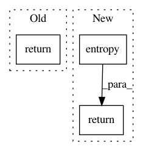

d6ec36775c907fc91bbbc13d5f56a7a8c62e9748,dit/multivariate/functional_common_information.py,,functional_common_information,#Any#Any#Any#Any#,74
Before Change
The functional common information.
d = functional_markov_chain(dist, rvs, crvs, rv_mode)
return entropy(d.marginalize(list(flatten(dist.rvs))))
After Change
The functional common information.
d = functional_markov_chain(dist, rvs, crvs, rv_mode)
return entropy(d, [dist.outcome_length()])
In pattern: SUPERPATTERN
Frequency: 3
Non-data size: 3
Instances
Project Name: dit/dit
Commit Name: d6ec36775c907fc91bbbc13d5f56a7a8c62e9748
Time: 2016-05-26
Author: ryangregoryjames@gmail.com
File Name: dit/multivariate/functional_common_information.py
Class Name:
Method Name: functional_common_information
Project Name: modAL-python/modAL
Commit Name: eecfa078a26ec4552ad3b72df0ba3fe02e37b58e
Time: 2017-12-16
Author: 28926195+cosmic-cortex@users.noreply.github.com
File Name: modAL/uncertainty.py
Class Name:
Method Name: classifier_entropy
Project Name: merenlab/anvio
Commit Name: 4fac1f7bd3c5d3f4b3bf416ba2009cdb3aa9973f
Time: 2019-10-11
Author: kiefl.evan@gmail.com
File Name: anvio/drivers/sourmash.py
Class Name: IterateKmerSourmash
Method Name: calc_similarity_matrix_entropy